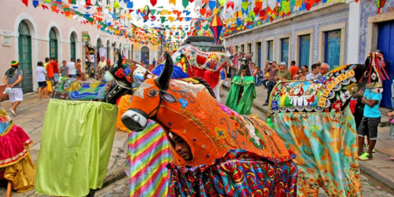
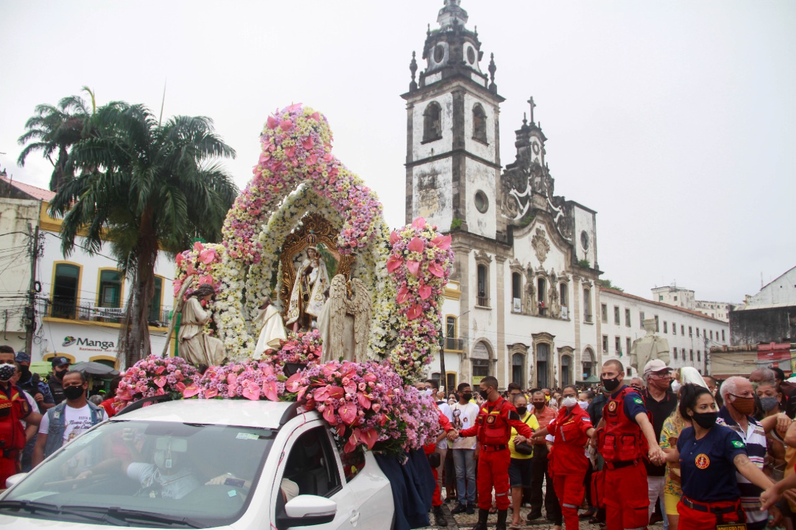

Tradições de Pernambuco
Pernambuco é um estado rico em tradições culturais que refletem a mistura de influências indígenas, africanas e europeias. Suas celebrações populares, músicas, danças e artesanato fazem parte de um patrimônio imaterial que atravessa gerações e encanta turistas e moradores locais.
Manifestações Culturais
As tradições de Pernambuco são reconhecidas mundialmente por sua originalidade e vivacidade. Algumas das principais manifestações culturais incluem:
-
Frevo: Patrimônio Imaterial da Humanidade pela UNESCO, o frevo é uma dança vibrante e símbolo do Carnaval de Recife e Olinda.

-
Maracatu: Uma manifestação afro-brasileira que mistura dança, música e religiosidade, dividida em dois estilos principais: Maracatu de Baque Solto e Baque Virado.

- Bumba Meu Boi: Uma representação teatral e folclórica que envolve música, dança e encenação. 
- Cavalo Marinho: Um folguedo tradicional do ciclo natalino, que mistura dança, música e encenações cômicas.
Artesanato
O artesanato pernambucano é uma expressão marcante da cultura do estado, sendo conhecido pela riqueza de detalhes e pelo uso de materiais locais. Entre os principais destaques estão:
- Bonecos de Olinda: Figuras gigantes que representam personalidades e são famosas no Carnaval de Olinda.
- Renda Renascença: Uma técnica de bordado delicada, bastante comum na região do Agreste.
- Esculturas em Madeira: Obras que retratam a cultura nordestina, feitas por artesãos talentosos.
- Cerâmica: Objetos decorativos e utilitários, muitas vezes com temas que remetem ao cotidiano e à fauna local.
Festividades
As festividades pernambucanas são momentos de celebração intensa, repletos de música, dança e tradições populares. Algumas das mais famosas são:
- Carnaval: O Carnaval de Pernambuco é um dos mais animados do Brasil, com destaque para o Galo da Madrugada, o maior bloco carnavalesco do mundo.
- São João: As festas juninas do estado são conhecidas pelas quadrilhas, fogueiras e comidas típicas, especialmente no interior.
- Festa de Nossa Senhora do Carmo: Uma celebração religiosa que atrai milhares de fiéis ao Recife. 
- Festival de Inverno de Garanhuns: Um evento cultural que reúne artistas nacionais e internacionais em uma grande celebração da música, teatro e artes visuais.